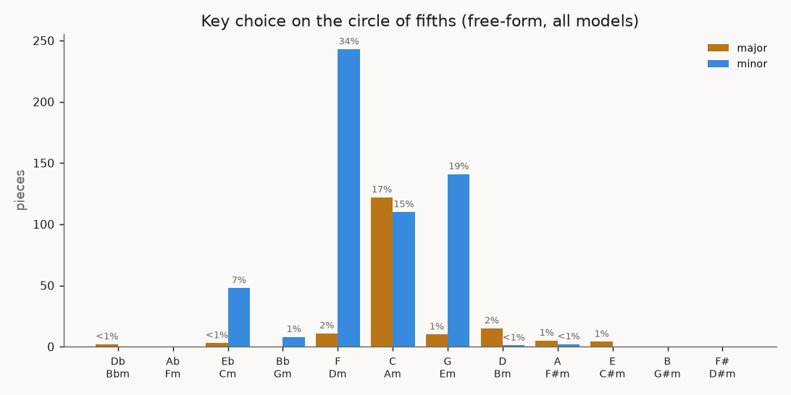

What do LLMs default to, musically?
Summary metrics across 883 generated pieces
(12 models, 15 experiments, code-gen + ABC + SMT-ABC).
Metrics are standard symbolic-music descriptors (MusPy + music21); affect is a
valence/arousal proxy (Russell circumplex). Generated by llm-music report.
Free-form defaults (the purest bias probe)
| model | n | minor | mode match | valence | arousal | tempo | scale consist. | consonance | chord-tones | harm. motion | structure | dyn. span | dyn. changes | instruments | instr. rarity | note density | length (s) |
|---|---|---|---|---|---|---|---|---|---|---|---|---|---|---|---|---|---|
| Bach chorales | 40 | 48% | — | 0.05 ±1.00 | 0.77 ±0.02 | 120 ±0 | 0.94 | 0.54 | 64% | 1.45 | 0.92 | 0.0 | 0.0 | 1.0 | 1.04 | 4.42 | 26 |
| fable-5 | 32 | 94% | 100% | -0.88 ±0.48 | 0.41 ±0.08 | 82 ±10 | 0.98 | 0.71 | 89% | 2.09 | 0.96 | 1.2 | 1.5 | 1.7 | 2.57 | 2.34 | 84 |
| gpt-4.1 | 32 | 75% | 97% | -0.50 ±0.87 | 0.54 ±0.09 | 116 ±14 | 0.99 | 0.61 | 80% | 1.93 | 0.95 | 0.0 | 0.0 | 1.1 | 1.24 | 1.82 | 52 |
| gpt-5.5 | 32 | 100% | 100% | -1.00 ±0.00 | 0.35 ±0.06 | 74 ±5 | 0.97 | 0.65 | 82% | 1.92 | 0.95 | 0.0 | 0.0 | 1.1 | 1.41 | 2.18 | 100 |
| opus-4.8 | 32 | 91% | 100% | -0.81 ±0.58 | 0.39 ±0.06 | 86 ±7 | 0.99 | 0.70 | 84% | 1.68 | 0.95 | 0.0 | 0.0 | 1.6 | 2.10 | 1.88 | 72 |
| sonnet-4.6 | 32 | 94% | 100% | -0.88 ±0.48 | 0.41 ±0.17 | 87 ±31 | 0.97 | 0.56 | 78% | 1.75 | 0.98 | 0.0 | 0.0 | 1.2 | 2.03 | 2.08 | 125 |
| gemini-2.5-pro | 30 | 97% | 90% | -0.93 ±0.36 | 0.43 ±0.16 | 91 ±23 | 0.98 | 0.48 | 80% | 1.68 | 0.95 | 0.1 | 0.2 | 1.1 | 1.33 | 2.04 | 84 |
| grok-4.3 | 30 | 43% | 100% | 0.13 ±0.99 | 0.43 ±0.15 | 103 ±25 | 0.99 | 0.60 | 78% | 2.01 | 0.97 | 0.0 | 0.0 | 1.1 | 1.16 | 1.41 | 52 |
| llama-4-maverick | 30 | 0% | 97% | 1.00 ±0.00 | 0.55 ±0.05 | 120 ±0 | 1.00 | 0.61 | 81% | 1.01 | 0.97 | 0.0 | 0.0 | 1.0 | 1.04 | 1.65 | 15 |
| opus-4.8-thinking | 30 | 100% | 97% | -1.00 ±0.00 | 0.34 ±0.04 | 80 ±7 | 0.97 | 0.73 | 89% | 1.90 | 0.97 | 0.0 | 0.0 | 1.6 | 2.22 | 1.83 | 83 |
| qwen3-max | 30 | 13% | 100% | 0.73 ±0.68 | 0.63 ±0.09 | 117 ±8 | 1.00 | 0.67 | 75% | 2.01 | 0.95 | 0.0 | 0.0 | 1.4 | 1.97 | 2.88 | 33 |
| sonnet-4.6-thinking | 30 | 93% | 97% | -0.87 ±0.50 | 0.25 ±0.05 | 70 ±6 | 0.99 | 0.68 | 88% | 1.99 | 0.97 | 0.8 | 1.9 | 1.1 | 1.25 | 1.48 | 98 |
| deepseek-v4-pro | 29 | 41% | 93% | 0.17 ±0.99 | 0.41 ±0.16 | 92 ±22 | 0.99 | 0.57 | 84% | 1.84 | 0.97 | 1.8 | 3.3 | 1.3 | 2.21 | 1.77 | 91 |
| model | n | minor | mode match | valence | arousal | tempo | scale consist. | consonance | chord-tones | harm. motion | structure | dyn. span | dyn. changes | instruments | instr. rarity | note density | length (s) |
|---|---|---|---|---|---|---|---|---|---|---|---|---|---|---|---|---|---|
| Bach chorales | 40 | 48% | — | 0.05 ±1.00 | 0.77 ±0.02 | 120 ±0 | 0.94 | 0.54 | 64% | 1.45 | 0.92 | 0.0 | 0.0 | 1.0 | 1.04 | 4.42 | 26 |
| fable-5 | 31 | 87% | — | -0.74 ±0.67 | 0.63 ±0.11 | 116 ±17 | 0.98 | 0.76 | 95% | 2.22 | 0.98 | 3.6 | 9.4 | 2.8 | 6.86 | 2.77 | 59 |
| gpt-5.5 | 31 | 100% | — | -1.00 ±0.00 | 0.74 ±0.09 | 112 ±15 | 0.96 | 0.36 | 84% | 2.31 | 0.97 | 4.5 | 26.5 | 3.9 | 10.26 | 4.75 | 61 |
| opus-4.8 | 31 | 100% | — | -1.00 ±0.00 | 0.62 ±0.07 | 119 ±5 | 0.96 | 0.61 | 92% | 2.04 | 0.95 | 2.4 | 4.5 | 2.3 | 5.38 | 2.43 | 37 |
| sonnet-4.6 | 31 | 90% | — | -0.81 ±0.59 | 0.56 ±0.11 | 113 ±18 | 0.96 | 0.47 | 77% | 1.69 | 0.94 | 4.4 | 16.2 | 2.0 | 5.02 | 2.17 | 53 |
| deepseek-v4-pro | 30 | 83% | — | -0.67 ±0.75 | 0.55 ±0.11 | 116 ±14 | 0.97 | 0.56 | 84% | 1.96 | 0.95 | 3.0 | 6.8 | 1.7 | 3.64 | 2.00 | 57 |
| grok-4.3 | 30 | 80% | — | -0.60 ±0.80 | 0.51 ±0.05 | 120 ±0 | 1.00 | 0.68 | 85% | 1.06 | 0.99 | 0.4 | 0.9 | 1.2 | 1.61 | 1.29 | 49 |
| llama-4-maverick | 30 | 27% | — | 0.47 ±0.88 | 0.48 ±0.05 | 120 ±0 | 1.00 | 0.87 | 94% | 0.52 | 0.94 | 0.0 | 0.0 | 1.0 | 1.11 | 1.02 | 35 |
| opus-4.8-thinking | 30 | 97% | — | -0.93 ±0.36 | 0.62 ±0.11 | 111 ±20 | 0.92 | 0.75 | 95% | 2.11 | 0.96 | 2.1 | 3.4 | 2.5 | 6.36 | 2.91 | 55 |
| qwen3-max | 30 | 73% | — | -0.47 ±0.88 | 0.51 ±0.10 | 118 ±10 | 0.96 | 0.66 | 80% | 1.81 | 0.89 | 1.0 | 1.7 | 1.4 | 2.60 | 1.39 | 23 |
| sonnet-4.6-thinking | 30 | 100% | — | -1.00 ±0.00 | 0.53 ±0.10 | 116 ±15 | 0.96 | 0.57 | 83% | 1.87 | 0.94 | 4.3 | 11.1 | 1.1 | 1.28 | 1.69 | 51 |
| gpt-4.1 | 29 | 62% | — | -0.24 ±0.97 | 0.51 ±0.09 | 118 ±12 | 0.98 | 0.55 | 84% | 1.92 | 0.94 | 2.1 | 5.4 | 1.3 | 2.05 | 1.42 | 36 |
| gemini-2.5-pro | 23 | 83% | — | -0.65 ±0.76 | 0.56 ±0.12 | 119 ±7 | 0.93 | 0.60 | 88% | 1.74 | 0.96 | 2.7 | 5.7 | 1.6 | 3.42 | 1.89 | 71 |
| model | n | minor | mode match | valence | arousal | tempo | scale consist. | consonance | chord-tones | harm. motion | structure | dyn. span | dyn. changes | instruments | instr. rarity | note density | length (s) |
|---|---|---|---|---|---|---|---|---|---|---|---|---|---|---|---|---|---|
| Bach chorales | 40 | 48% | — | 0.05 ±1.00 | 0.77 ±0.02 | 120 ±0 | 0.94 | 0.54 | 64% | 1.45 | 0.92 | 0.0 | 0.0 | 1.0 | 1.04 | 4.42 | 26 |
| fable-5 | 63 | 90% | 100% | -0.81 ±0.59 | 0.52 ±0.15 | 98 ±22 | 0.98 | 0.73 | 92% | 2.16 | 0.97 | 2.4 | 5.4 | 2.2 | 4.68 | 2.55 | 72 |
| gpt-5.5 | 63 | 100% | 100% | -1.00 ±0.00 | 0.54 ±0.21 | 93 ±22 | 0.97 | 0.51 | 83% | 2.11 | 0.96 | 2.2 | 13.0 | 2.5 | 5.76 | 3.44 | 81 |
| opus-4.8 | 63 | 95% | 100% | -0.90 ±0.43 | 0.50 ±0.13 | 103 ±17 | 0.98 | 0.66 | 88% | 1.85 | 0.95 | 1.2 | 2.2 | 1.9 | 3.71 | 2.15 | 55 |
| sonnet-4.6 | 63 | 92% | 100% | -0.84 ±0.54 | 0.48 ±0.16 | 100 ±29 | 0.97 | 0.51 | 77% | 1.72 | 0.96 | 2.1 | 8.0 | 1.6 | 3.50 | 2.12 | 89 |
| gpt-4.1 | 61 | 69% | 97% | -0.38 ±0.93 | 0.53 ±0.09 | 117 ±13 | 0.99 | 0.58 | 82% | 1.92 | 0.94 | 1.0 | 2.6 | 1.2 | 1.62 | 1.63 | 45 |
| grok-4.3 | 60 | 62% | 100% | -0.23 ±0.97 | 0.47 ±0.12 | 112 ±20 | 1.00 | 0.64 | 82% | 1.54 | 0.98 | 0.2 | 0.5 | 1.1 | 1.38 | 1.35 | 51 |
| llama-4-maverick | 60 | 13% | 97% | 0.73 ±0.68 | 0.52 ±0.06 | 120 ±0 | 1.00 | 0.71 | 87% | 0.77 | 0.95 | 0.0 | 0.0 | 1.0 | 1.08 | 1.34 | 25 |
| opus-4.8-thinking | 60 | 98% | 97% | -0.97 ±0.26 | 0.48 ±0.16 | 95 ±22 | 0.94 | 0.74 | 92% | 2.01 | 0.97 | 1.1 | 1.7 | 2.1 | 4.29 | 2.37 | 69 |
| qwen3-max | 60 | 43% | 100% | 0.13 ±0.99 | 0.57 ±0.11 | 118 ±9 | 0.98 | 0.66 | 78% | 1.91 | 0.92 | 0.5 | 0.9 | 1.4 | 2.28 | 2.13 | 28 |
| sonnet-4.6-thinking | 60 | 97% | 97% | -0.93 ±0.36 | 0.39 ±0.16 | 93 ±26 | 0.97 | 0.63 | 86% | 1.93 | 0.96 | 2.5 | 6.5 | 1.1 | 1.27 | 1.58 | 75 |
| deepseek-v4-pro | 59 | 63% | 93% | -0.25 ±0.97 | 0.48 ±0.15 | 104 ±22 | 0.98 | 0.56 | 84% | 1.90 | 0.96 | 2.4 | 5.1 | 1.5 | 2.94 | 1.89 | 73 |
| gemini-2.5-pro | 53 | 91% | 90% | -0.81 ±0.58 | 0.49 ±0.16 | 103 ±22 | 0.96 | 0.53 | 84% | 1.70 | 0.95 | 1.2 | 2.6 | 1.3 | 2.24 | 1.97 | 78 |
All pieces, by model
| model | n | minor | mode match | valence | arousal | tempo | scale consist. | consonance | chord-tones | harm. motion | structure | dyn. span | dyn. changes | instruments | instr. rarity | note density | length (s) |
|---|---|---|---|---|---|---|---|---|---|---|---|---|---|---|---|---|---|
| Bach chorales | 40 | 48% | — | 0.05 ±1.00 | 0.77 ±0.02 | 120 ±0 | 0.94 | 0.54 | 64% | 1.45 | 0.92 | 0.0 | 0.0 | 1.0 | 1.04 | 4.42 | 26 |
| fable-5 | 54 | 80% | 100% | -0.59 ±0.81 | 0.44 ±0.12 | 85 ±15 | 0.97 | 0.69 | 89% | 1.93 | 0.97 | 1.4 | 2.6 | 2.0 | 4.14 | 2.57 | 83 |
| gpt-4.1 | 52 | 65% | 96% | -0.31 ±0.95 | 0.50 ±0.14 | 106 ±23 | 0.99 | 0.57 | 80% | 1.94 | 0.95 | 0.0 | 0.0 | 1.6 | 3.54 | 1.99 | 57 |
| gpt-5.5 | 52 | 92% | 100% | -0.85 ±0.53 | 0.39 ±0.08 | 74 ±6 | 0.95 | 0.58 | 80% | 1.95 | 0.95 | 0.2 | 0.4 | 1.7 | 3.66 | 2.70 | 98 |
| opus-4.8 | 52 | 75% | 100% | -0.50 ±0.87 | 0.39 ±0.07 | 85 ±8 | 0.99 | 0.67 | 83% | 1.64 | 0.95 | 0.0 | 0.0 | 1.9 | 3.91 | 2.04 | 69 |
| sonnet-4.6 | 52 | 83% | 98% | -0.65 ±0.76 | 0.39 ±0.18 | 85 ±36 | 0.97 | 0.53 | 78% | 1.76 | 0.98 | 0.0 | 0.0 | 1.7 | 3.69 | 2.18 | 121 |
| qwen3-max | 32 | 19% | 100% | 0.62 ±0.78 | 0.63 ±0.09 | 116 ±10 | 1.00 | 0.67 | 75% | 1.96 | 0.95 | 0.0 | 0.0 | 1.4 | 2.22 | 2.87 | 33 |
| deepseek-v4-pro | 31 | 42% | 94% | 0.16 ±0.99 | 0.41 ±0.16 | 93 ±22 | 0.99 | 0.57 | 84% | 1.81 | 0.98 | 1.6 | 3.1 | 1.4 | 2.57 | 1.78 | 90 |
| gemini-2.5-pro | 30 | 97% | 90% | -0.93 ±0.36 | 0.43 ±0.16 | 91 ±23 | 0.98 | 0.48 | 80% | 1.68 | 0.95 | 0.1 | 0.2 | 1.1 | 1.33 | 2.04 | 84 |
| grok-4.3 | 30 | 43% | 100% | 0.13 ±0.99 | 0.43 ±0.15 | 103 ±25 | 0.99 | 0.60 | 78% | 2.01 | 0.97 | 0.0 | 0.0 | 1.1 | 1.16 | 1.41 | 52 |
| llama-4-maverick | 30 | 0% | 97% | 1.00 ±0.00 | 0.55 ±0.05 | 120 ±0 | 1.00 | 0.61 | 81% | 1.01 | 0.97 | 0.0 | 0.0 | 1.0 | 1.04 | 1.65 | 15 |
| opus-4.8-thinking | 30 | 100% | 97% | -1.00 ±0.00 | 0.34 ±0.04 | 80 ±7 | 0.97 | 0.73 | 89% | 1.90 | 0.97 | 0.0 | 0.0 | 1.6 | 2.22 | 1.83 | 83 |
| sonnet-4.6-thinking | 30 | 93% | 97% | -0.87 ±0.50 | 0.25 ±0.05 | 70 ±6 | 0.99 | 0.68 | 88% | 1.99 | 0.97 | 0.8 | 1.9 | 1.1 | 1.25 | 1.48 | 98 |
| model | n | minor | mode match | valence | arousal | tempo | scale consist. | consonance | chord-tones | harm. motion | structure | dyn. span | dyn. changes | instruments | instr. rarity | note density | length (s) |
|---|---|---|---|---|---|---|---|---|---|---|---|---|---|---|---|---|---|
| Bach chorales | 40 | 48% | — | 0.05 ±1.00 | 0.77 ±0.02 | 120 ±0 | 0.94 | 0.54 | 64% | 1.45 | 0.92 | 0.0 | 0.0 | 1.0 | 1.04 | 4.42 | 26 |
| fable-5 | 42 | 88% | — | -0.76 ±0.65 | 0.64 ±0.11 | 115 ±17 | 0.97 | 0.72 | 92% | 2.09 | 0.97 | 3.6 | 10.8 | 3.0 | 7.99 | 3.03 | 59 |
| gpt-5.5 | 41 | 100% | — | -1.00 ±0.00 | 0.72 ±0.10 | 112 ±17 | 0.94 | 0.38 | 82% | 2.35 | 0.96 | 4.4 | 26.8 | 3.9 | 10.52 | 4.68 | 62 |
| opus-4.8 | 41 | 90% | — | -0.80 ±0.59 | 0.63 ±0.07 | 119 ±4 | 0.96 | 0.61 | 90% | 2.04 | 0.95 | 2.3 | 4.1 | 2.6 | 6.44 | 2.54 | 37 |
| sonnet-4.6 | 41 | 83% | — | -0.66 ±0.75 | 0.57 ±0.12 | 114 ±18 | 0.95 | 0.46 | 77% | 1.66 | 0.94 | 4.4 | 18.2 | 2.3 | 6.26 | 2.31 | 51 |
| gpt-4.1 | 38 | 61% | — | -0.21 ±0.98 | 0.52 ±0.09 | 118 ±10 | 0.97 | 0.52 | 83% | 1.89 | 0.94 | 2.1 | 5.6 | 1.7 | 3.27 | 1.49 | 35 |
| deepseek-v4-pro | 31 | 81% | — | -0.61 ±0.79 | 0.55 ±0.11 | 116 ±14 | 0.97 | 0.56 | 85% | 1.94 | 0.95 | 2.9 | 6.7 | 1.7 | 3.56 | 1.97 | 56 |
| qwen3-max | 31 | 74% | — | -0.48 ±0.88 | 0.51 ±0.09 | 118 ±10 | 0.96 | 0.66 | 80% | 1.79 | 0.90 | 1.0 | 1.9 | 1.4 | 2.55 | 1.38 | 23 |
| grok-4.3 | 30 | 80% | — | -0.60 ±0.80 | 0.51 ±0.05 | 120 ±0 | 1.00 | 0.68 | 85% | 1.06 | 0.99 | 0.4 | 0.9 | 1.2 | 1.61 | 1.29 | 49 |
| llama-4-maverick | 30 | 27% | — | 0.47 ±0.88 | 0.48 ±0.05 | 120 ±0 | 1.00 | 0.87 | 94% | 0.52 | 0.94 | 0.0 | 0.0 | 1.0 | 1.11 | 1.02 | 35 |
| opus-4.8-thinking | 30 | 97% | — | -0.93 ±0.36 | 0.62 ±0.11 | 111 ±20 | 0.92 | 0.75 | 95% | 2.11 | 0.96 | 2.1 | 3.4 | 2.5 | 6.36 | 2.91 | 55 |
| sonnet-4.6-thinking | 30 | 100% | — | -1.00 ±0.00 | 0.53 ±0.10 | 116 ±15 | 0.96 | 0.57 | 83% | 1.87 | 0.94 | 4.3 | 11.1 | 1.1 | 1.28 | 1.69 | 51 |
| gemini-2.5-pro | 23 | 83% | — | -0.65 ±0.76 | 0.56 ±0.12 | 119 ±7 | 0.93 | 0.60 | 88% | 1.74 | 0.96 | 2.7 | 5.7 | 1.6 | 3.42 | 1.89 | 71 |
| model | n | minor | mode match | valence | arousal | tempo | scale consist. | consonance | chord-tones | harm. motion | structure | dyn. span | dyn. changes | instruments | instr. rarity | note density | length (s) |
|---|---|---|---|---|---|---|---|---|---|---|---|---|---|---|---|---|---|
| Bach chorales | 40 | 48% | — | 0.05 ±1.00 | 0.77 ±0.02 | 120 ±0 | 0.94 | 0.54 | 64% | 1.45 | 0.92 | 0.0 | 0.0 | 1.0 | 1.04 | 4.42 | 26 |
| fable-5 | 96 | 83% | 100% | -0.67 ±0.75 | 0.53 ±0.15 | 98 ±22 | 0.97 | 0.70 | 90% | 2.00 | 0.97 | 2.3 | 6.2 | 2.4 | 5.83 | 2.77 | 73 |
| gpt-5.5 | 93 | 96% | 100% | -0.91 ±0.41 | 0.53 ±0.19 | 91 ±22 | 0.95 | 0.49 | 81% | 2.13 | 0.96 | 2.1 | 12.1 | 2.6 | 6.69 | 3.57 | 82 |
| opus-4.8 | 93 | 82% | 100% | -0.63 ±0.77 | 0.50 ±0.14 | 100 ±19 | 0.98 | 0.64 | 86% | 1.81 | 0.95 | 1.0 | 1.8 | 2.2 | 5.03 | 2.26 | 55 |
| sonnet-4.6 | 93 | 83% | 98% | -0.66 ±0.75 | 0.47 ±0.18 | 98 ±33 | 0.96 | 0.50 | 78% | 1.72 | 0.96 | 2.0 | 8.0 | 2.0 | 4.82 | 2.24 | 90 |
| gpt-4.1 | 90 | 63% | 96% | -0.27 ±0.96 | 0.51 ±0.12 | 111 ±20 | 0.98 | 0.55 | 81% | 1.92 | 0.95 | 0.9 | 2.4 | 1.6 | 3.42 | 1.78 | 48 |
| qwen3-max | 63 | 46% | 100% | 0.08 ±1.00 | 0.57 ±0.11 | 117 ±10 | 0.98 | 0.66 | 78% | 1.88 | 0.92 | 0.5 | 0.9 | 1.4 | 2.38 | 2.14 | 28 |
| deepseek-v4-pro | 62 | 61% | 94% | -0.23 ±0.97 | 0.48 ±0.15 | 104 ±22 | 0.98 | 0.56 | 84% | 1.88 | 0.96 | 2.3 | 4.9 | 1.5 | 3.07 | 1.87 | 73 |
| grok-4.3 | 60 | 62% | 100% | -0.23 ±0.97 | 0.47 ±0.12 | 112 ±20 | 1.00 | 0.64 | 82% | 1.54 | 0.98 | 0.2 | 0.5 | 1.1 | 1.38 | 1.35 | 51 |
| llama-4-maverick | 60 | 13% | 97% | 0.73 ±0.68 | 0.52 ±0.06 | 120 ±0 | 1.00 | 0.71 | 87% | 0.77 | 0.95 | 0.0 | 0.0 | 1.0 | 1.08 | 1.34 | 25 |
| opus-4.8-thinking | 60 | 98% | 97% | -0.97 ±0.26 | 0.48 ±0.16 | 95 ±22 | 0.94 | 0.74 | 92% | 2.01 | 0.97 | 1.1 | 1.7 | 2.1 | 4.29 | 2.37 | 69 |
| sonnet-4.6-thinking | 60 | 97% | 97% | -0.93 ±0.36 | 0.39 ±0.16 | 93 ±26 | 0.97 | 0.63 | 86% | 1.93 | 0.96 | 2.5 | 6.5 | 1.1 | 1.27 | 1.58 | 75 |
| gemini-2.5-pro | 53 | 91% | 90% | -0.81 ±0.58 | 0.49 ±0.16 | 103 ±22 | 0.96 | 0.53 | 84% | 1.70 | 0.95 | 1.2 | 2.6 | 1.3 | 2.24 | 1.97 | 78 |
Key choices (circle of fifths — major on C, relative minors on A)
Which keys each model chooses in free-form, as a share of its pieces (a PDF). Toggle representation — ABC uses the model's declared K:, code-gen uses music21's detected key. Click a model to filter, click Corpus to see the real-music prior (GigaMIDI, detected the same way), or tick overlay to lay that prior over the selected model.
Reliability (format-success & retries, per method)
| model | method | n | 1st-try valid | failed | avg tries |
|---|---|---|---|---|---|
| deepseek-v4-pro | abc | 31 | 77% | 0% | 1.23 |
| deepseek-v4-pro | smt-abc | 1 | 100% | 0% | 1.00 |
| fable-5 | abc | 42 | 93% | 0% | 1.07 |
| fable-5 | smt-abc | 12 | 100% | 0% | 1.00 |
| gemini-2.5-pro | abc | 30 | 80% | 0% | 1.27 |
| gpt-4.1 | abc | 41 | 98% | 0% | 1.02 |
| gpt-4.1 | smt-abc | 11 | 100% | 0% | 1.00 |
| gpt-5.5 | abc | 41 | 100% | 0% | 1.00 |
| gpt-5.5 | smt-abc | 11 | 100% | 0% | 1.00 |
| grok-4.3 | abc | 30 | 100% | 0% | 1.00 |
| llama-4-maverick | abc | 30 | 97% | 0% | 1.03 |
| opus-4.8 | abc | 41 | 100% | 0% | 1.00 |
| opus-4.8 | smt-abc | 11 | 100% | 0% | 1.00 |
| opus-4.8-thinking | abc | 30 | 100% | 0% | 1.00 |
| qwen3-max | abc | 31 | 100% | 0% | 1.00 |
| qwen3-max | smt-abc | 1 | 100% | 0% | 1.00 |
| sonnet-4.6 | abc | 41 | 100% | 0% | 1.00 |
| sonnet-4.6 | smt-abc | 11 | 100% | 0% | 1.00 |
| sonnet-4.6-thinking | abc | 30 | 47% | 0% | 1.60 |
| model | method | n | 1st-try valid | failed | avg tries |
|---|---|---|---|---|---|
| deepseek-v4-pro | codegen | 31 | 45% | 0% | 1.77 |
| fable-5 | codegen | 42 | 100% | 0% | 1.00 |
| gemini-2.5-pro | codegen | 30 | 33% | 23% | 2.77 |
| gpt-4.1 | codegen | 41 | 32% | 7% | 2.27 |
| gpt-5.5 | codegen | 41 | 98% | 0% | 1.02 |
| grok-4.3 | codegen | 30 | 60% | 0% | 1.40 |
| llama-4-maverick | codegen | 30 | 53% | 0% | 1.77 |
| opus-4.8 | codegen | 41 | 78% | 0% | 1.34 |
| opus-4.8-thinking | codegen | 30 | 83% | 0% | 1.20 |
| qwen3-max | codegen | 31 | 84% | 0% | 1.16 |
| sonnet-4.6 | codegen | 41 | 85% | 0% | 1.17 |
| sonnet-4.6-thinking | codegen | 30 | 0% | 0% | 2.97 |
| model | method | n | 1st-try valid | failed | avg tries |
|---|---|---|---|---|---|
| deepseek-v4-pro | abc | 31 | 77% | 0% | 1.23 |
| deepseek-v4-pro | codegen | 31 | 45% | 0% | 1.77 |
| deepseek-v4-pro | smt-abc | 1 | 100% | 0% | 1.00 |
| fable-5 | abc | 42 | 93% | 0% | 1.07 |
| fable-5 | codegen | 42 | 100% | 0% | 1.00 |
| fable-5 | smt-abc | 12 | 100% | 0% | 1.00 |
| gemini-2.5-pro | abc | 30 | 80% | 0% | 1.27 |
| gemini-2.5-pro | codegen | 30 | 33% | 23% | 2.77 |
| gpt-4.1 | abc | 41 | 98% | 0% | 1.02 |
| gpt-4.1 | codegen | 41 | 32% | 7% | 2.27 |
| gpt-4.1 | smt-abc | 11 | 100% | 0% | 1.00 |
| gpt-5.5 | abc | 41 | 100% | 0% | 1.00 |
| gpt-5.5 | codegen | 41 | 98% | 0% | 1.02 |
| gpt-5.5 | smt-abc | 11 | 100% | 0% | 1.00 |
| grok-4.3 | abc | 30 | 100% | 0% | 1.00 |
| grok-4.3 | codegen | 30 | 60% | 0% | 1.40 |
| llama-4-maverick | abc | 30 | 97% | 0% | 1.03 |
| llama-4-maverick | codegen | 30 | 53% | 0% | 1.77 |
| opus-4.8 | abc | 41 | 100% | 0% | 1.00 |
| opus-4.8 | codegen | 41 | 78% | 0% | 1.34 |
| opus-4.8 | smt-abc | 11 | 100% | 0% | 1.00 |
| opus-4.8-thinking | abc | 30 | 100% | 0% | 1.00 |
| opus-4.8-thinking | codegen | 30 | 83% | 0% | 1.20 |
| qwen3-max | abc | 31 | 100% | 0% | 1.00 |
| qwen3-max | codegen | 31 | 84% | 0% | 1.16 |
| qwen3-max | smt-abc | 1 | 100% | 0% | 1.00 |
| sonnet-4.6 | abc | 41 | 100% | 0% | 1.00 |
| sonnet-4.6 | codegen | 41 | 85% | 0% | 1.17 |
| sonnet-4.6 | smt-abc | 11 | 100% | 0% | 1.00 |
| sonnet-4.6-thinking | abc | 30 | 47% | 0% | 1.60 |
| sonnet-4.6-thinking | codegen | 30 | 0% | 0% | 2.97 |
Charts



Methods & references
Metrics are standard symbolic-music descriptors, computed with MusPy (Dong et al., ISMIR 2020) — scale consistency, pitch-class entropy, polyphony, etc. — and music21 for key (Krumhansl–Schmuckler) and tempo. Affect (valence/arousal) follows the Russell circumplex model. Hover any column header for what it measures. Project after sara-fish/llm-musical-self-expression; representation/evaluation choices follow the LLM-music literature (ChatMusician, MuPT).
Note: the charts above aggregate all representations; the toggle at the top drives the tables and the key-choice chart.